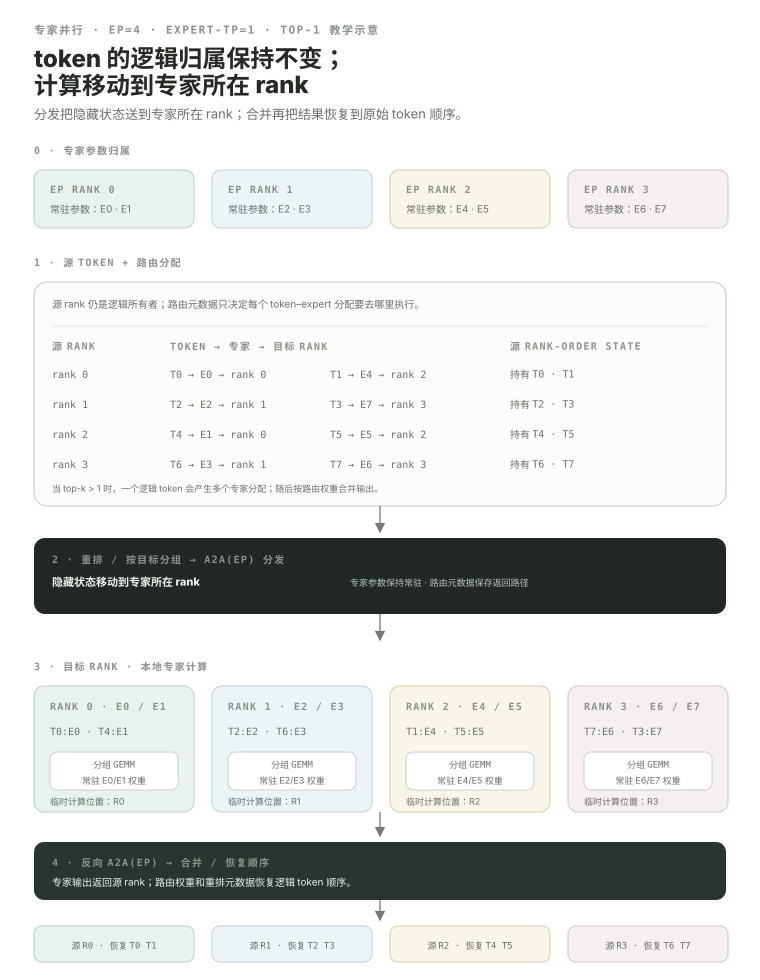

专家并行（EP）：路由器一旦把 token 指向远端专家，通信为什么会变成多对多？
稠密 MLP 是“所有 token 都经过同一组权重”。混合专家模型（MoE）则由路由器给每个 token 选择少数专家，只执行被选中的专家 MLP。专家并行再把专家集合分到不同 rank。于是系统问题不再是“把同一个张量求和”，而是“每个 token 应该发给哪个专家，以及那个专家位于哪个 rank”。All-to-All 会自然出现，但它只是分发器的一种实现，不是专家并行（EP）的定义。
- 理解 MoE 层 = 路由器 + 专家 + 稀疏的 token→专家分配关系。
- 区分三种不同语义：逻辑 token 归属、专家参数归属、临时计算归属。
- 从路由推导多对多数据移动为什么适合 All-to-All。
- 看懂分发 → 本地专家 GEMM → 合并 → 恢复 token 顺序的完整生命周期。
- 知道当前 Megatron 训练分发器支持
allgather/alltoall/flex，且flex后端当前包括 DeepEP / HybridEP / NVIDIA 集体通信库（NCCL）-EP。 - 理解稠密并行网格与专家并行网格是两套 rank 生成视角，EP 不是无条件在
TP×PP×CP×DP外再乘一次。 - 知道负载均衡解决路由分布不均，分组 GEMM 则优化本地专家计算；两者不是同一个问题。
MoE 不是很多完整模型，而是把部分 FFN/MLP 层换成一组专家。
比如有 8 个 routed 专家，每个 token 只走 top-2。专家参数量可以大幅增加，但单 token 只激活其中少数专家，因此激活计算量不会简单乘以总专家数。
MoE 的核心先是稀疏激活。EP 是专家被放到不同各个 rank 后，为了执行这种稀疏选择而引入的分布式布局。
教学例：EP=4、8 个专家，每个 EP rank 持有 2 个 local 专家。
路由器的选择不会尊重“token 原来在哪张图形处理器（GPU）”。rank 0 上的 token 可以被分到 rank 3 的 Expert 6，因此 hidden state 必须到达拥有目标专家的执行位置；专家权重本身并不会跟着每个 token 搬过去。
这张图只说明 EP 轴。真实 Megatron 还可能给专家使用独立的专家张量-parallel size，并构造专家-数据并行（DP）。不要把一个 global rank 只想成“EP rank”。
真正要分清三件事：逻辑 token 归属关系保持在 source rank；hidden state 会移动；专家计算在专家 owner 上临时执行。
下面故意把例子简化成 EP=4、expert-TP=1、top-1 路由，目的是先把归属关系看清。每个 source rank 都有自己的原始 token；路由器只产生 destination 专家与路由元数据；分发器把 token hidden states 发到专家 owner；本地专家 GEMM 完成后，再把输出送回原始 token 所属的 rank 与位置。

top-k 大于 1 时，一个逻辑 token 会产生多个 token–专家分配关系s。这些分配关系s 可以被送到不同专家 owners；合并阶段不仅要把结果送回来，还要按路由 weights 合并多个专家 outputs。于是通信规模更接近“分配关系数”，而不是只数原始 token 数。
EP-only 心智图很重要，但当前 Megatron 的 All-to-All 分发器还明确区分 EP 通信与专家-TP 通信。
当前 MoEAlltoAllTokenDispatcher 的源码注释把 workflow 写得很清楚：preprocess / permute → A2A(EP) → 如果专家-张量并行（TP）大于 1，再做 AG(TP) 并整理 local 专家 chunks → 专家计算 → 合并前做 RS(TP) → A2A(EP) → unpermute。
dispatch_preprocess本地计算 destination counts、permutation 等元数据；尽量不要在这里偷偷混入额外通信，以便后续重叠执行。token_dispatch主跨设备 transport。All-to-All 路径先在 EP 进程组做 destination-specific 交换。dispatch_postprocess必要时处理专家-TP 的 gather / chunk sorting，并整理成 local 专家可以消费的连续 token 进程组s。token_combine专家 outputs 反向跨设备交换；All-to-All 分发器把结果送回原 source rank，随后合并 postprocess / unpermute 恢复原逻辑位置。路由器分布一旦很偏，最慢专家/rank 会拖住整层。
理想情况是 token 在专家之间比较均衡。现实里路由器学到的分布可能很偏：
某个专家还在处理大量分配关系s 时，其它各个 rank 可能已经空闲。系统上的因果链是：路由器分布 → per-专家分配关系 count → 通信数据量 + GEMM shape → straggler time。
当前 TransformerConfig.moe_router_load_balancing_type 默认是 aux_loss，并支持 seq_aux_loss、global_aux_loss、sinkhorn、quantile_balancing、none 等策略。容量控制是另一维：moe_expert_capacity_factor=None 表示默认不因 capacity 丢 token；设置 capacity factor 后还能配合 padding 等机制。
通信结束以后还有第二个效率问题：每个专家收到的 token 数可能不大。
--moe-grouped-gemm 解决的是 local 专家计算 efficiency，不是 token 分发网络本身。不要把“Grouped GEMM”和“通信融合”混成一件事。
当前训练配置明确支持 allgather、alltoall、flex。
allgather；实现会跨 TP×EP domain gather token/路由 data，本地挑选属于 local 专家的分配关系s，合并使用 reduce-scatter。moe_flex_dispatcher_backend 支持 deepep、hybridep、ncclep，默认是 DeepEP。因此更准确的话是：EP 产生 destination-dependent token traffic；分发器 contract 决定怎样搬这些分配关系s。All-to-All 是最直观的实现，但不是定义本身。
TransformerConfig.moe_token_dispatcher_type 类型为 allgather | alltoall | flex、默认 allgather；flex 后端当前为 deepep | hybridep | ncclep。TP、CP、EP 不能靠一个“把所有缩写乘起来”的公式理解。
cp=1。当前 parallel_state.py 会单独计算 expert_tensor_parallel_size × expert_model_parallel_size × pipeline_model_parallel_size（再考虑实验性专家广义张量并行（GTP） remat 轴），然后用 world size 除它得到专家-DP。随后 expert_decoder_rank_generator 以 tp=expert_tensor_parallel_size、ep=expert_model_parallel_size、dp=expert_data_parallel_size、pp=...、cp=1 构造专家进程组s。
这就是为什么 EP 不能机械地在 dense 总 GPU 公式外再乘一次。一个 global rank 同时参与 dense 与专家两套进程组关系；真正要问的是“当前这段层用哪套进程组”。
Token 交换很重，工程优化会尽量把它藏进其它可并行计算窗口。
overlap_moe_expert_parallel_comm启用专家通信与其它计算的重叠执行路径。delay_wgrad_compute延后部分 weight-梯度工作，为通信暴露可利用的计算窗口。moe_shared_expert_overlap让 shared-专家计算与支持的 alltoall/flex 分发器通信并发。这些选项高度版本相关，不能只背命令行界面（CLI）名称。05.8 的核心方法仍然是：先画 dependency，再看 async launch / 流 / 等待，最后用 profiler 证明时间区间是否真的重叠。
沿“路由器 → 分发器 → 专家 grid → 专家”读。
routing scores / top-k决定 token→专家分配关系s 与 load-balance objective。allgather / alltoall / flex负责 permutation、跨各个 rank transport、专家-TP 配合与合并。expert rank generator回答专家-TP / EP / 专家-DP 这些各个 rank 怎样组合。local expert MLPs / 分组 GEMM收到分配关系s 后真正执行专家计算。把 EP 的归属关系、分发器和 topology 三层分开。
现在把这节课的数据流亲手跑一遍。
先用小规模 reference 验证 correctness 与依赖关系；真实性能结论仍以对应硬件与通信栈实测为准。
Lab A11 · Mini 专家并行
跑通路由器 → 分发 → local 专家 → reverse 合并，并检查 token identity。 打开实验 →
本课出现的缩写与术语
正文优先使用 中文名（缩写） 建立概念；完整英文名集中放在这里，便于继续阅读英文文档与源码。
| 缩写 | English full name | 中文名 | 本课怎么理解 |
|---|---|---|---|
MLP | Multi-Layer Perceptron | 多层感知机 | Transformer block 中常见的前馈子层。 |
MoE | Mixture of Experts | 混合专家模型 | 由 router 为 token 选择少数 experts 的稀疏模型结构。 |
EP | Expert Parallel | 专家并行 | 把 MoE experts 分布到不同 ranks，并路由 token 到对应 expert。 |
GEMM | General Matrix Multiply | 通用矩阵乘法 | Linear、MLP 等大量计算最终会落到的矩阵乘核心操作。 |
NCCL | NVIDIA Collective Communications Library | NVIDIA 集体通信库 | GPU 集群中常用的 collective / P2P 通信软件库。 |
TP | Tensor Parallel | 张量并行 | 把单层内部的大矩阵/计算沿张量维度分到多个 ranks。 |
PP | Pipeline Parallel | 流水线并行 | 沿模型深度切成多个 pipeline stages，并用 microbatch 流水。 |
CP | Context Parallel | 上下文并行 | 让 Attention 沿 context/sequence 维跨 ranks 工作并交换必要上下文。 |
DP | Data Parallel | 数据并行 | 不同 replica 处理不同数据，再同步训练状态；它主要切数据而不是切单层模型。 |
FFN | Feed-Forward Network | 前馈网络 | Transformer / MoE 中按 token 独立应用的前馈子网络；MoE expert 通常就是一类 FFN。 |
GPU | Graphics Processing Unit | 图形处理器 | 大模型训练与推理中执行 GEMM、Attention 等高并行计算的主要设备。 |
A2A | All-to-All | 全对全通信 | 每个 rank 给不同 peers 发送不同数据；MoE dispatch 中很典型。 |
AG | All-Gather | 全收集 | 把各 rank 的 shard 收集成完整结果并让参与者获得。 |
RS | Reduce-Scatter | 归约分散 | 先做 reduction，再让每个 rank 只保留一个 reduced shard。 |
GTP | Generalized Tensor Parallelism | 广义张量并行 | Megatron 当前的新型张量并行路径；源码中的 GTP remat/replica 语义不能和经典 TP 简单混为一谈。 |
CLI | Command-Line Interface | 命令行界面 | 通过终端参数和命令配置、启动或调试程序的接口。 |
Communication Overlap：Megatron 怎么让通信和 GEMM 真正重叠？